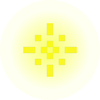
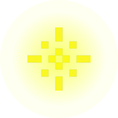

Soft Steps: Accessibility
Platformer Game
A Gentle Game About Sharp Feelings
Overview
Soft Steps is a 2D pixel platformer game designed to raise awareness
about hyperesthesia and hyperalgesia by simulating sensory overload through gameplay.
Players navigate soft, rough, and sharp surfaces while managing a sensitivity meter,
collecting healing orbs, and progressing through gardens, caves, and forests.
The art direction emphasizes cozy, muted aesthetics to evoke calm, comforting,
and contrasting platformer visuals.
Context
The game was created to simulate the daily sensory challenges faced
by individuals with hyperesthesia. Popular platformers often prioritize excitement
and difficulty but rarely consider how overstimulation can affect playability.
Our goal was to introduce an empathetic lens into game design, balancing challenge
with accessibility.
Textures That Tell Stories
Process
🔬 Research
Our team investigated the lived experience of hyperesthesia and hyperalgesia,
exploring symptoms like pain sensitivity and how textures can become overwhelming.
Research influenced how we designed surface types and informed gameplay mechanics like the sensitivity bar.
We also looked into global accessibility design principles to ensure inclusivity.
Low-fidelity Sketches
Moving Screen
Our original idea was to have our main screen move upwards as users jump up in the game.
We deemed it as too much screen movement, which could be overwhelming for users, in addition to the other
features in the game.
💡 Ideation
We brainstormed around metaphors and mechanics that could convey discomfort without being punitive
The narrative of searching for a lost cat served as a grounding emotional anchor. Multiple design sketches
and platforming tests helped visualize the game flow before coding began.
Low-fidelity Prototype
Functionality Over Visuals
For this low-fidelity prototype, we focused on a few key components:
the sensitivity bar, platform variations, level design, and avatar movement. Since
our priority was functionality over visuals, it gave us plenty of space to explore
how each platform could be differentiated and how the avatar would interact with them.
Visual Simplicity, Emotional Depth
✍ Design
The pixelated design direction was chosen to enhance clarity and mood while maintaining simplicity.
Levels include floral gardens, forest paths, and caves, each with soft, muted tones. Custom assets,
AI‑assisted visuals, and consistent UI elements made the experience more cohesive.
Custom Visual Assets


 

Contrasting but cozy
To keep the game fun, engaging, and visually appealing, our team knew we
had to create a variety of custom assets. We aimed for designs that were both visually
distinct for accessibility and still carried a light, cozy feel. From glowing orbs to
checkpoint platforms, we explored a wide range of styles to bring the world to life.
🛠️ Testing
Play‑testing was conducted with classmates and professors across both development phases.
Feedback focused on platform difficulty, jump range accuracy, and visual readability.
Based on this, we adjusted platform spacing, added checkpoints, and ensured all jumps were always reachable.
Final Product


Solution
The final game invites players into a serene yet stimulating environment
where overstimulation is not just a challenge—but a central gameplay mechanic.
With features like healing orbs, checkpoints, and a sensitivity bar, players are
empowered to self‑regulate their experience. These elements work together to simulate
the heightened sensory awareness associated with hyperalgesia, offering both immersion
and introspection. The project was applauded by both professors and students for its
thoughtful implementation of disability representation and its innovative game
functionality.
Reflection
This project taught me how to translate abstract sensations into game logic,
balance levels, and iterate based on feedback. I gained experience in p5.js development,
accessibility‑focused design, and user testing while improving teamwork, code optimization,
and adaptive design. Challenges like jump consistency and aligning visuals with gameplay
were solved through grid‑based validation, custom assets, and refined pacing.
Solving Softly
🌟 Results
Soft Steps used pain sensitivity mechanics to promote empathy, spark discussions on invisible disabilities, and encourage inclusive design thinking. By translating complex sensory experiences into interactive gameplay, the project fostered deeper understanding and dialogue around accessibility in digital spaces.
📋 Outcome
The final four‑level platformer included boss mechanics, checkpoints, collectibles, and a pause menu, earning positive feedback for originality and theme cohesion. Its layered design and thoughtful integration of accessibility features were especially praised for enhancing both gameplay and narrative depth.
📈 Metrics
Play‑testing showed smoother navigation and reduced frustration, with 80% of testers completing the game without overloading their sensitivity meter. This affirmed the success of our accessibility mechanics in balancing challenge with comfort.